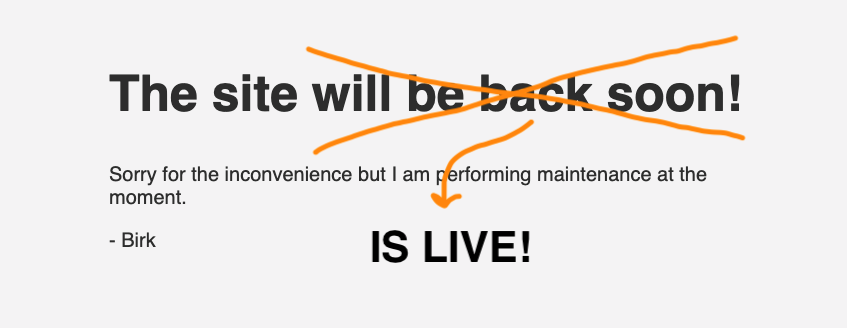

On this site, you can find various things I thought might be interesting to share!
On the blog, I will post small entries about anything I find interesting at the moment.
The portfolio and CV sections will showcase the cool things I'm currently doing or have done in the past.
A Little More About Me
Everything in my life seems to circle around three main passions: technology, nature, and people.
So far in my professional life, people have held the main spotlight.
First, combined with technology, I was a certified event coordinator, running a small department hosting multiple events centered around teaching game development.
Then, combined with nature, I was a professional ski instructor at Sun Peaks, Canada BC, where I taught skiing and hosted and executed weekly events on the mountain.
Now, my focus has shifted to technology, where I'm currently enrolled as a software engineering student at Aarhus University.
Contact
Email: web at mbirk.dk
Behind the Website
This website is a single HTML file, directly adapted from John Doe's website.
(Be gentle, they said it was okay).
This is my first real step into website and web development, so as of now, most credit goes to the people who wrote and distributed John Doe's website.
My First Website!
This post marks the first iteration of my first website! Really exciting stuff.
Not that the technology I have used is very interesting, as the front page states.
The website is a single HTML file with a little CSS, which I did not write.
But I'm excited that I now have a place to share the things I create and achieve!
The journey started with a Udemy Course,
where I completed the HTML part. Then, half a year later, a random
Hacker News post
I sadly can't find the Hacker News post anymore…
Finally paved the way for getting content on my domain, which had been sitting idle
since probably 2017!

Again, thanks to
John Doe's website for providing the framework for this site.
Solar Sailors 2016
I attended a high school called Game College
that teaches game development on top of the normal
technical high school curriculum through multiple projects each year.
Our graduation project was the game Solar Sailors, where my primary responsibility
was aligning the team with the process and ensuring we met our requirements and deadlines.
The project spanned 3 months, and the team consisted of 6 programmers, 3 artists,
and myself as the primary producer.
The goal was to create a fun and engaging game where players had to work together to win.
Click the image to watch our MVP in action!
The link will open YouTube.
Portfolios of others from the project:
Daniel Hansen Sebastian Hyberts
Curious and creative, I blend technical skills with hands-on experience,
thriving in collaborative environments. My diverse background enhances
my adaptability and leadership, making me a dynamic software engineer.
Whether developing features, woodworking, or teaching, I channel
creativity and problem-solving into all I do. Eager to learn and grow,
I am enthusiastic about contributing to meaningful solutions.
View a single page version of my resume here.
The content is generally the same, just presented more concisely.
updated on: 06/08/2024
Various maintenance and refactoring tasks within the wccadm python library and command
line tool used to execute critical updates to the large SCADA system at CERN.
This included adding support for WinCC OA 3.19, updating the
packages-structure and test-suite.
Defined and led a new part of the innovation department, with the responsibility
of creating workshops in game development for 7th to 9th graders, as an experience
market concept.
I lead and coordinated event projects that ranged from 1 staff, 5 participants
to 45 staff and 1,100 participants.
2019 - 2020: Ski Instructor, Tourist Guide, and Golf Marshal at Sun Peaks Mountain
Resort, Canada
Spent one year in the Canadian tourist industry, in various roles.
Always with a focus on the guest experience, leadership and safety.
The graduation project consisted of the development of an Android application as part
of an enteral food delivery system. The application used Bluetooth to configure the
embedded device that delivered the food and was developed fully with F#. The project
also included detailed requirement specifications and a project management process
that greatly boosted the outcome of the project.
In the ski season 2019-2020, I trained as a ski instructor and achieved level 2 in the
Canadian Ski Instructor Alliance. Additionally,
I pursued further training in mountain safety with a 20-day back-country navigation
course, resulting in achieving the first level of the Avalanche Canada safety course.
2018 - 2019: Vocational Training as an Event Coordinator
As part of my work for Viden Djurs, I trained as an event coordinator at IBC Kolding. I
completed the two-year program in one year.
2013 - 2016: Technical High School
I attended high school at Game College,
Viden Djurs. Game College is a boarding school that, in addition to the technical high
school curriculum, teaches game development. In various teams, I was involved in
completing five projects that lasted between one and a half to three months. I primarily
worked as a game designer, artist and project manger.
Involvement and Volunteering
Aarhus University - Representative for My Year
Since my first semester at AU, I have been the representative for my year on the
Education Committee. The Education Committee is responsible for ensuring that the
education is as good as possible. I provided direct feedback from the student
perspective and offered fresh ideas on how to improve our education.
Pioneer at Spejdernes lejer 2022
I spent two weeks building the entrance protals for the 2022 scout camp.
Sun Peaks Resort: Guide, Host, and Leader
for Starlight Descent and Fondue
I volunteered as a guide and host for the Starlight Descent and Fondue at
Sun Peaks Resort. Later, I was promoted
to paid staff and coordinator, presenting the event to the guests.
As a student, I cared deeply about my school, which led me to become involved in many
aspects of the school.
Tutor and Coordinator of Tutors
From my first semester, I volunteered as a tutor, guiding primary school students
visiting our school. Starting in my third semester, I became the primary student
coordinator, responsible for organizing tutors, shifts, and activities.
Volunteer for Marketing
From my second semester, I participated in 1 to 4 education exhibitions per semester
as part of the marketing team. This eventually led to my job as an event coordinator
after I graduated.
Student Board
I was my class representative on the student board.
This page is not referenced in the menu, for example.
This setup
It might get unpractical for more than a handful of pages, but it comes in handy if all you need is a simple website.
is databaseless, javascriptless, and buildshit-free, so you can edit your website with a text editor and upload it somewhere
This page is hosted for free at Neocities, where you can use their somewhat clunky online code editor to update your site. Github Pages would be another option, here is a repository to start with.
like a normal person.